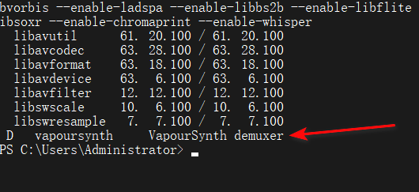
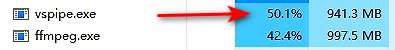

Issue #225: FFmpeg's VapourSynth demuxer instead of vspipe
2026-11-19 · macOS arm64 (M1 Pro, 8 cores), deps 1.16.0 (VapourSynth R78), FFmpeg 9.0.2 built with
--enable-vapoursynth · scripts in scripts/, raw runs in data/
Outcome
- Not adopted. The demuxer gives byte-identical frames, but it runs a heavy script 1.2–3.3× slower (QTGMC Medium: 135 → 41 fps at SD into a null encoder, 56 → 39 fps into x264), because it asks VapourSynth for one frame at a time. vspipe keeps one request per thread in flight.
- vspipe's CPU in Task Manager is the filters, not the pipe. Every VapourSynth filter runs inside the vspipe process. With the demuxer the same work shows up under ffmpeg instead. The pipe itself (writing and reading Y4M) costs 0.3 ms a frame at SD and 1.5 ms at 1080p, under 1% of a job that encodes with x264.
- Current third-party builds can't load our VapourSynth. The demuxer asks for the VSScript API of the headers it was compiled against. Builds made with R80 or later headers (BtbN's, which we ship on Windows and Linux, have used R80–R82 since adding the demuxer on 2026-10-02) ask for VSScript 4.4, and R78 offers 4.3, so the request returns NULL. gyan.dev's headers were not checked; a build made since R80 (2026-10) would be refused the same way. Using the demuxer would mean building every platform's FFmpeg against R78 ourselves, or moving to R80+, which drops the 12 API 3 plugins (task #74).
- It is not a plugin API change. The demuxer is a VapourSynth client like vspipe; the R78 core still loads our API 3 plugins whichever client asks for frames.
1. What the issue reports

D vapoursynth VapourSynth demuxer.
The demuxer is not new. libavformat/vapoursynth.c has existed since FFmpeg 4.0 (2018). What changed is
d42cd5b75 (2024-08, FFmpeg 7.1), which loads libvapoursynth-script at run time instead of linking it,
so third-party builds can enable it at no cost. gyan.dev has, and so has BtbN (2026-10-02).
scripts.d/50-vapoursynth.sh,
confirmed in the current ffmpeg-n9.0-latest-linux64-gpl-9.0 binary, which contains
--enable-vapoursynth and the string libvapoursynth-script.so. The martin-riedl.de builds we ship
on macOS do not enable it.
2. How the demuxer works (FFmpeg n9.0.2 source)
- One synchronous request at a time.
read_packet_vscallsvsapi->getFrame(n, …)and returns the frame before FFmpeg asks for the next. VapourSynth still parallelises the work within one output frame (the upstream frames it needs), but no two output frames are worked on at once. vspipe usesgetFrameAsyncwith--requestsdefaulting to the core's thread count. The file has had no functional change since 2024-08. - Zero copy. Planes are handed to FFmpeg by reference (
wrapped_avframe); there is no Y4M serialisation and no pipe. - Frame properties become live. It reads
_Matrix,_Primaries,_Transfer,_ColorRange,_SARNum/_SARDeninto each frame. Our encode relies on the Y4M pipe stripping all of these and re-declares the tags on the encoder's input (see CLAUDE.md, "Colour metadata"). With the demuxer the script's props would reach the encoder, which would need re-checking with pixels._FieldBasedis not read. - Library lookup. It
dlopenslibvapoursynth-script.{so,dylib}, or on Windows the registry'sVSScriptDLL, elseVSScript.dll. R78's package shipslibvsscript; the test here needed a symlink. - Version check. It asks for
VSSCRIPT_API_VERSIONfrom the headers it was built with, and R78'sgetVSScriptAPIaccepts onlymajor == 4 && minor <= 3.
3. Which VSScript versions R78 accepts
| VapourSynth headers | VSScript requested | Our bundle (R78) answers |
|---|---|---|
| R78, R79 | 4.3 | ok |
| R80, R81, R82 | 4.4 | NULL: "Failed to initialize VSScript" |
Measured by scripts/vsscript_api_probe.c, which dlopens the bundle's
libvsscript.dylib and calls getVSScriptAPI for 4.1–4.4: 4.1, 4.2, 4.3 ok; 4.4 NULL. The header
minors per release were read from each tag's include/VSScript4.h. BtbN's header pin was R80 (2026-10-02),
R81 (10-26) and R82 (11-17).
Not run: a BtbN or gyan.dev binary against the bundle (no Windows or Linux machine here). The refusal
follows from the source and the probe.
4. Throughput and CPU
One FFmpeg binary for both arms (FFmpeg 9.0.2 built with --enable-vapoursynth and Homebrew's x264,
scripts/build_ffmpeg.sh), so only the path through VapourSynth differs. Both arms read the source the way
VapourBox does: a decoder ffmpeg pipes raw frames into the script's stdin, read by the worker's own
pipe_source.py.
- vspipe:
dec | vspipe -c y4m script.vpy - | ffmpeg -f yuv4mpegpipe -i - … - demuxer:
dec | ffmpeg -nostdin -f vapoursynth -i script.vpy …
Sources: testsrc2 with temporal noise, FFV1, 720x576 × 500 frames and 1920x1080 × 200 frames
(scripts/gen_sources.sh). Scripts: passthrough (the pipe alone), light (std.BoxBlur),
qtgmc (havsfunc QTGMC Medium, TFF, double rate). Encoders: rawvideo to null (isolates the VapourSynth
side), and libx264 -preset medium -crf 18 (a real job). Medians of 3 runs. CPU is user+sys of every process.
| Script | Size | Encoder | vspipe fps | demuxer fps | demuxer throughput (dashed = vspipe) | Total CPU s, vspipe → demuxer |
|---|---|---|---|---|---|---|
| passthrough | SD | null | 475.3 | 475.3 | 1.00× | 5.5 → 5.3 |
| passthrough | SD | x264 | 66.3 | 66.8 | 1.01× | 49.6 → 49.6 |
| passthrough | HD | null | 127.6 | 133.5 | 1.05× | 9.6 → 9.3 |
| passthrough | HD | x264 | 13.5 | 13.3 | 0.99× | 100.5 → 100.7 |
| light | SD | null | 418.1 | 339.0 | 0.81× | 6.6 → 6.2 |
| light | SD | x264 | 130.9 | 131.4 | 1.00× | 24.8 → 24.7 |
| light | HD | null | 109.3 | 92.2 | 0.84× | 11.9 → 11.2 |
| light | HD | x264 | 26.2 | 25.1 | 0.96× | 51.2 → 50.8 |
| qtgmc | SD | null | 134.6 | 40.8 | 0.30× | 48.2 → 44.4 |
| qtgmc | SD | x264 | 56.1 | 39.1 | 0.70× | 117.9 → 108.8 |
| qtgmc | HD | null | 27.4 | 9.6 | 0.35× | 88.8 → 77.6 |
| qtgmc | HD | x264 | 9.4 | 7.9 | 0.84× | 236.7 → 222.1 |
fps counts output frames (QTGMC doubles them). data/summary.csv is scripts/summarise.py
over data/results.csv; the per-process split is in the raw file.
What the numbers say
- The pipe is cheap. On passthrough the two arms run at the same speed. vspipe's process plus the encoder's Y4M read cost 0.98 s for 500 SD frames against the demuxer's 0.81 s (0.3 ms a frame), and 0.88 s against 0.59 s for 200 HD frames (1.5 ms a frame). x264 spends about 90 ms of CPU on each of those SD frames and 460 ms on each HD frame, so the pipe is under 1% of a real encode. vspipe's own process used 0.6–1.2 s in every passthrough run.
- Serial requests cost throughput as soon as the script does real work. QTGMC through the demuxer is 3.3× slower at SD and 2.9× at HD when nothing else competes for the cores. x264 hides part of the loss by filling idle cores (0.70× and 0.84×), but every QTGMC case is slower. Even a one-pass blur loses 16–19% unencoded.
- The demuxer used 6–13% less total CPU on QTGMC (e.g. 43.0 → 40.2 s for the VapourSynth side at SD, 79.4 → 69.3 s at HD). Only ~0.3 s of that is the pipe, by the passthrough numbers; the rest is presumably the cost of running many frames at once (threads contending, more cache traffic), which is what buys vspipe its 3× throughput. Not investigated further. It is less CPU for a much longer job, not a saving on the same job.
- Output is identical. QTGMC through both arms, frame MD5s: 1000 of 1000 SD frames and 400 of 400 HD
frames equal (
scripts/identity.sh).
Limits: one Apple Silicon machine (6 performance + 2 efficiency cores); Windows and x86 not measured, and the
issue's report is from Windows. Synthetic sources; QTGMC's cost depends little on content, x264's a lot. Three runs per
cell. The vspipe/QTGMC/HD/x264 runs spread from 34 to 49 s: a 146 MB download and xz extraction overlapped part
of the benchmark, so that cell is the least reliable; no conclusion rests on it. Memory: the demuxer arm's encoder process
peaked between 9 MB lower and 465 MB higher than vspipe's largest process, because it now holds the VapourSynth core as well; total memory was
not compared.
5. What adopting it would take
Recorded for the next time this comes up. None of it was built.
- Concurrent requests in the demuxer (upstream FFmpeg), so it keeps several frames in flight as vspipe does. Without this it is slower on every job that matters.
- An FFmpeg that can load our VapourSynth: built by us against R78 headers on all four platforms (giving up BtbN's and martin-riedl's builds and their hardware encoders, SVT-AV1 and so on, or rebuilding them), or VapourSynth R80+, which needs every plugin on API 4 first (task #74). The FFmpeg pin would then be tied to the VapourSynth pin.
- Library naming: a
libvapoursynth-scriptlink on macOS/Linux; on WindowsVSScript.dllon the encoder'sPATH(the portable R78 wheel registers nothing). - Error reporting: today a script error or a native plugin crash is vspipe's
(
vspipe_failure::blame, task #28). In-process, a plugin crash takes the encoder down with it, and a script error arrives as FFmpeg's one-lineFailed to parse script: …. - Colour and aspect: the props the demuxer now honours (section 2) against the tags the encoder is given; checked with pixels, per CLAUDE.md.
- stdin: the script reads the decoder's frames from stdin, so the encoder needs
-nostdin(done here, and it works). - Preview runs vspipe as well and would need the same change.
Decisions
- Keep vspipe. The demuxer is slower on every job where filters do real work, the CPU it "saves" is the filters moving process, and the builds that ship it can't load R78.
- Revisit only if FFmpeg's demuxer gains concurrent frame requests and the bundle has moved to
VapourSynth R80+ (task #74). Then re-run
scripts/run_all.sh.
Reproducing
WORK=/path/to/scratch DEPS=deps/macos-arm64 docs/reports/issue-225-ffmpeg-vapoursynth-demuxer/scripts/run_all.sh 3Builds FFmpeg (needs Homebrew x264), makes the sources (~600 MB of FFV1), writes the scripts, runs the benchmark, the identity check and the VSScript probe. About 30 minutes on an M1 Pro.